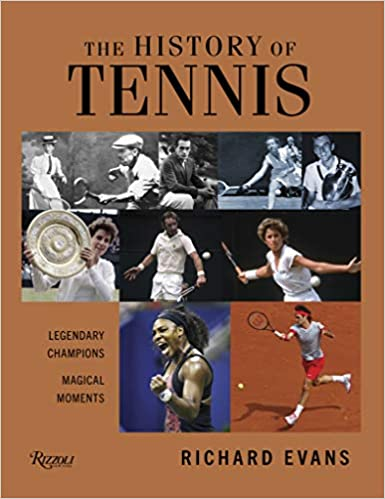

Bine ai venit !
Aici poți găsi:
- O scurtă introducere în lumea tenisului
- < Informații generale >
- < Turnee importante >
- Un model de formular pentru crearea unui cont
- Scoruri și clasamente live WTA și ATP
Tenisul este un sport cu rachetă care poate fi jucat individual împotriva unui singur adversar (simplu) sau între două echipe a câte doi jucători (dublu). Fiecare jucător folosește o rachetă de tenis pentru a lovi o minge de cauciuc acoperită cu fetru peste sau în jurul unui fileu și în terenul adversarului. Obiectivul jocului este să manevreze mingea în așa fel încât adversarul să nu poată juca o întoarcere validă. Jucătorul care nu poate întoarce mingea nu va câștiga nici un punct, în timp ce jucătorul opus va câștiga.
Este un sport olimpic și se joacă la toate nivelurile societății și la toate vârstele. Sportul poate fi jucat de oricine
poate ține o rachetă, inclusiv de persoanele în scaune cu rotile. Jocul modern de tenis a luat naștere în Birmingham, Anglia,
la sfârșitul secolului al XIX-lea ca tenis de gazon.Avea conexiuni strânse atât cu diverse jocuri de câmp (gazon), cum ar
fi croquet și bowls, cât și cu sportul de rachetă mai vechi numit astăzi tenis adevărat.Mai multe despre istoria tenisului
pot fi găsite accesând link-ul https://ro.wikipedia.org/wiki/Tenis#Istoric .
De asemenea , istoria tenisului poate fi aflată și prin intermediul cărții "The History of Tennis: Legendary Champions. Magical Moments":

Tenisul este jucat de milioane de jucători pentru agrement și este, de asemenea, un sport popular pentru spectatori în întreaga lume. Cele patru turnee de Grand Slam (numite și Majore) sunt deosebit de populare: Australian Open se joacă pe terenuri cu suprafață dură, French Open pe terenuri cu zgură roșie, Wimbledon pe terenuri cu iarbă și US Open pe terenuri cu suprafață dură.
| GRAND SLAM | ORAȘ GAZDĂ | SUPRAFAȚĂ |
Australian Open |
Melbourne | Suprafață dură |
French Open |
Paris | Zgură |
Wimbledon |
Londra | Iarbă |
US Open |
New York City | Suprafață dură |